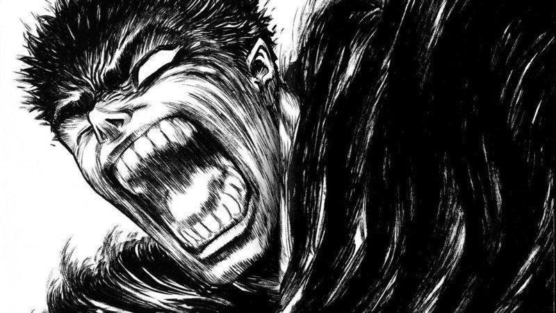

Guts possui uma força titânica adquirida de uma infância dura vivida com um bando de mercenários. Guts é visto por muitos como a personificação da resistência e da força de vontade humana. De alguma forma, Guts sempre consegue sobreviver, mesmo arriscando a vida desnecessariamente, desde que seja um risco que o leve a um caminho para a vitória. Ele enfrentou e triunfou com sucesso contra muitos adversários humanos, tais como Bazuso, Zondark e Boscogn. No entanto, suas maiores batalhas são contra os seres horríveis conhecidos como Apóstolos, os quais podem se transformar em demônios gigantes, facilmente superando grupos de homens.
Aos seis anos, Guts começou seu treinamento com Gambino, usando uma espada forjada para adultos, mesmo quando os mercenários assistindo sugeriam que ele deveria usar uma espada mais adequado ao seu tamanho. Mesmo que ele claramente tinha dificuldades para empunhar a lâmina, Guts persistia, conseguindo arranhar o queixo de Gambino. Guts continuou o seu treinamento até o ponto onde ele podia enfrentar mesmo os homens maiores. Com a idade de nove anos, ele entra em sua primeira batalha com uma espada longa e faz seu primeiro assassinato, ainda que indiretamente. No entanto, ele é mais tarde atingido por um mangual na parte de trás e é quase morto, mas é salvo pela intervenção de Gambino.
Algum tempo depois de ser pego por outro bando de mercenários, e mais tarde viajar sozinho, Guts, com uma espada menor e menos afiada, ele foi capaz de derrotar um homem maior blindado com uma maça, apesar do fato de que a espada era completamente incapaz de romper a armadura do oponente. Isso demonstra a habilidade de Guts de se adaptar com armas diferentes, e até mesmo inferiores. Ele também incorpora um guarda pulso esquerdo para ajudar no bloqueio de ataques inimigos, colocando-o atrás da lâmina de sua espada.
Aos vinte anos, como o Espadachim Negro, Guts é demonstrado como sendo um verdadeiro mestre espadachim, até mesmo considerado pelo Conde como o maior de todos os seres humanos. Guts demonstrou ser capaz de bloquear ataques mais rápidos do que o olho humano pode ver, e tudo isso com a insanamente pesada Dragonslayer. Com seu vasto arsenal, Guts demonstrou ser capaz de derrotar inimigos em qualquer alcance, cada opção de arma se tornando mais letal a medida que ele se aproxima.
